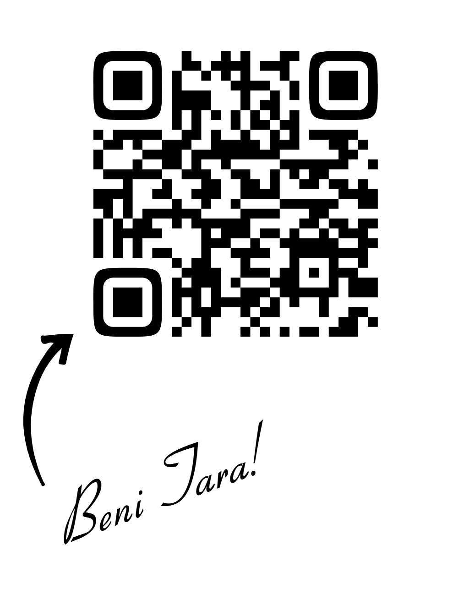

Hakkımda
C, HTML, CSS ve JavaScript öğreniyorum. Bu sayfa proje ödevim. 2005 yılında Batman/Hasankeyf'te doğdum. Şu anda Malatya İnönü Üniversitesi'nde Yazılım Mühendisliği okuyorum. Teknolojiye ve yazılıma büyük bir ilgim var ve kendimi bu alanda sürekli geliştiriyorum. Ayrıca Malatya Teknokent'te de ise basladım şu anda aktif olarak çalısmaktayım
Zaman Çizelgem
Kişisel Bilgiler
Doğum Yeri: Hasankeyf/Batman
Doğum Tarihi: 2005
Eğitim: İnönü Üniversitesi - Yazılım Mühendisliği
Telefon: 0552 170 7235
Email:
cicekisa105@gmail.com
Hobilerim
- Kort Tenis Oynamak
- Voleybol
- Film İzlemek
- Yüzmek
- Seyahat Etmek
- Doğa Yürüyüşleri
- Spor Yapmak
Yeteneklerim
Haftalık Programım
| Haftalık Programım | ||||||
|---|---|---|---|---|---|---|
| Pazartesi | Salı | Çarşamba | Perşembe | Cuma | Cumartesi | Pazar |
| Spor | Matematik | İşte Çalışma | Ayrık Yapılar | Lineer Cebir | Programlama (Linked List) | Programlama (JavaScript) |
| Programlama Dersine Çalış | Öz Bakım | İşte Çalışma | Gece Kitap Oku | Yüzme Zamanı | Web Programlama | Spor |
| Görev ve Sorumluluklar | Tenis Zamanı | İşte Çalışma | Sevdiklerinle Vakit Geçir | Gece Kitap Oku | Java Becend Çalış | React Çalış |
| Dışarı Çık | Kitap Oku | İşte Çalışma | Sevdiklerinle Vakit Geçir | Yarınki JavaScript Konuya Göz At | Java Becend Çalış | React Çalış |
Gezdiğim Yerler
- Antalya
- Mersin
- Adana
- Diyarbakır
- Şanlıurfa
- Şırnak
- Batman/Hasankeyf
- Sinop
- Samsun
- Ankara
Gezmek İstediğim Yerler
- İzmir
- Çanakkale
- İstanbul
- Kristal Mağara, Skaftafell, İzlanda
- Wisteria Tüneli, Kitakyushu, Japonya
- Lavanta Tarlaları, Provence, Fransa
- Plitvice Gölü, Hırvatistan
- Ki Manastırı, Himalayalar
- Eyfel Kulesi, Paris
- Blue Lagoon, İzlanda
Eğlenceli Bilgiler
- Hasankeyf'e gittiğimde Hasankeyf Kalesi'ni ve daha nice tarihi yerleri gördüm, çok güzel bir deneyimdi.
- Sinop'ta yaylaya çıkmıştım, sabaha karşı yaylada doğanın sesiyle çay içmeyi tavsiye ederim.
- Batman'da doğdum, ama hep İzlanda'ya gidip Kuzey Işıklarını yakından görmek istemişimdir.
- Arkadaşım anlatmıştı Tokyo'da Sakura ağaçlarının altında kahve içmek çok güzel diye, ben de gitmek isterim.
- Eyfel Kulesi'ne karşı oturup birkaç saatliğine muhteşem demir yığınını görmek isterim.
Projelerim
Basit Hesap Makinesi
JavaScript ile Geliştirdiğim ilk mini projemdir.
Dijital Saat
HTML ile yapısı, CSS ile tasarımı, JS ile sürekli Güncellenen Saat
TO-DO-LİST (Yapılacaklar Listesi)
Görev ekleme, silme, tamamlama özellikli
Arka Plan Rengi Değiştirici
Butona tıklayınca sayfanın arka plan rengini değiştir
Basit Web Sayfası - Hakkımda
HTML ve CSS ile kendini tanıtan bir kişisel sayfa
Tahmin Et Oyunu
Rastgele bir sayı tutar, kullanıcı tahmin eder. JS ile geri bildirim verir
LinkedIn sayfamı hızlıca tarayarak bulabilirsiniz
